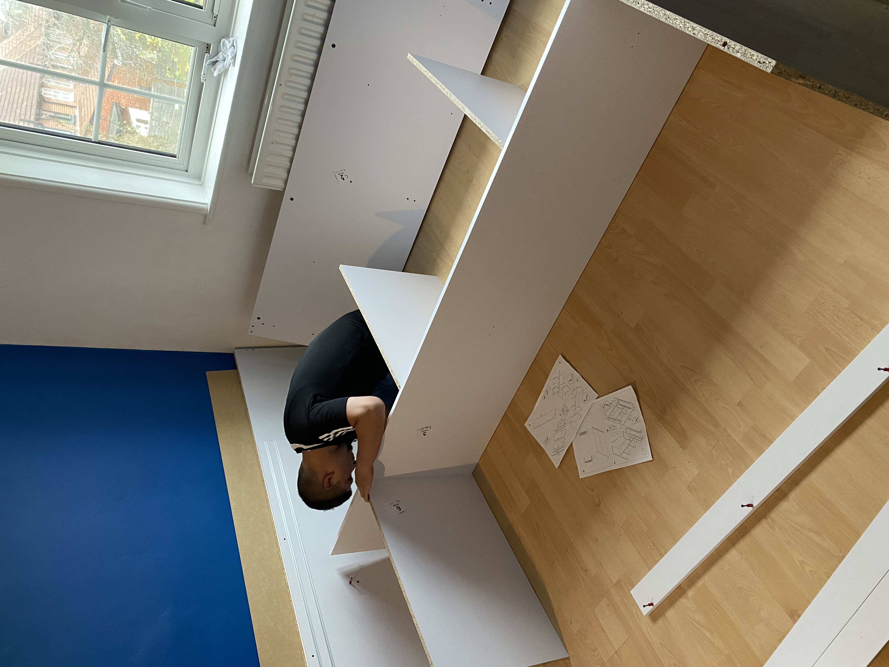

Removals Wandsworth – Professional House & Flat Moving Services You Can Trust
On paper, a move across Wandsworth can look simple: pack, load, drive, unload. In practice, the day often turns on details that only show up once the van is at the kerb — parking controls, narrow residential roads, split-level flats in converted terraces, and timing that collides with school-run traffic. Mudanzas Edyta London is the moving company Wandsworth customers choose when they want removals Wandsworth handled with calm structure: honest communication, realistic scheduling, careful protection of furniture, and crews who know how SW18 removals actually behave on the ground — not just on a map.
Many house removals Wandsworth and flat removals Wandsworth bookings start with the same assumption: “We’ll figure it out on the day.” That works until you meet controlled parking zones, short loading windows, streets that pinch when neighbours’ cars are already parked, or a Victorian terrace where the sofa route is tighter than the inventory suggested. The difference between a stressful scramble and a controlled move is usually preparation — knowing where the van can sit, how long the crew can work efficiently, and what needs dismantling before anyone carries it downstairs.
We position ourselves for customers who want more than basic transport: local removals Wandsworth with packing and moving service Wandsworth options, proper wrapping, assembly where it saves time and prevents damage, and a team that respects that your move is not “just another job.” If you value straightforward answers, a clear plan, and careful hands on items that matter, that is the standard we hold for every Wandsworth removals booking we take on.
Moving in Wandsworth – Why Local Conditions Matter More Than People Expect
Controlled Parking Zones and timing restrictions across Wandsworth
Wandsworth Borough runs a wide network of Controlled Parking Zones (CPZs). In practice, that shapes almost every SW18 removals job. Some zones carry all-day restrictions, often roughly 9:30am–5:30pm Monday to Friday, with some areas extending further. Elsewhere you will find one-hour commuter-style controls — sometimes only an hour a day, such as 10am–11am or 11am–12pm. Outside those windows, parking can be less constrained, but you still need to read the bay: many pay-and-display or shared-use spaces cap stays at around two to four hours, which matters when a full house move does not finish inside a short ticket. Near larger institutions or specific frontages, rules can differ again — so “it looked fine yesterday” is not the same as “it works for a Luton today.”
Along busier corridors such as Garratt Lane, Old York Road and other well-used routes through the borough, you will often meet paid parking or strict time limits on bays — another reason loading strategy matters more than people expect, especially when the job cannot simply “wait ten minutes.”
For removals, this is not bureaucracy for its own sake. It decides where the van can sit, whether the crew can keep the vehicle close for efficient loading, and whether the job risks rushed carries because the clock on a bay is ticking. Longer moves need honest scheduling — not hope — so we avoid delays, double handling, and the stress of a team trying to compress a full property into an unrealistic kerb window.
School Streets, traffic timing and access delays
Wandsworth operates School Street schemes in multiple locations. Restrictions often fall around 8:00am–9:00am and 2:50pm–3:50pm — peak school-run windows. Important detail: holding a general permit does not automatically mean you may enter a School Street during restricted times; some schemes use camera enforcement with ANPR, so a timing mistake can mean fines or wasted loops while the crew loses productive minutes. For larger moves, especially where the property sits near a school route or a busy connector, this is a strong reason to plan the day properly rather than “arrive and see.”
Layer in school-run traffic on surrounding roads — not only inside a School Street — and you see why access, parking and timing belong in the same conversation as “how many boxes.” We use this local picture to set realistic arrival and loading plans, so your move is paced for Wandsworth’s rhythm, not an idealised quiet street.
Housing layouts, flats and restricted access in Wandsworth
Wandsworth’s housing stock is varied: period houses, long terraces, subdivided conversions, and flats reached by stairs or shared hallways. Newer developments sometimes come with parking and access that is less straightforward than a simple kerbside stop — including situations where residents may not qualify for standard on-street permits in the usual way. Across older streets, dropped kerbs and driveway access need respect: blocking a crossing point can force awkward carries and slow everything down. Some estates run separate parking controls from the surrounding street network, so what works on one road may not apply at the courtyard or underground bay.
That mix is exactly why we ask practical questions up front — stairs, lift, narrow turns, heaviest pieces — so the crew arrives with the right mindset, tools, and time. The goal is fewer surprises on the doorstep and a move that feels managed, not improvised.
When you book removals Wandsworth with us, we treat parking, timing and access as part of the job — because on moving day, they usually are.

Larger Moves in Wandsworth Need More Than Just a Van
Not every move needs the same level of planning — but confusing the two is where stress creeps in. We split jobs clearly so you can choose the right route and get pricing that matches the work.
Smaller, straightforward moves
Some jobs suit a lighter touch: single items, small flat moves, simple one-day local work, furniture transport, or a compact man and van Wandsworth booking when access is manageable and the scope is easy to describe. For these, our instant quote calculator is built to make pricing and booking fast — so you spend minutes, not days, locking in a crew.
Larger or more complex home moves
Then there are moves that deserve deeper preparation: family homes, larger flats, properties with stairs or awkward hallways, parking complications, furniture that must be taken apart and rebuilt, heavier pieces, multi-room inventories, or situations where you need packing and unpacking to protect time and fragile items. For these, we steer you to our detailed Google Form (linked from our services page). Collecting access detail, a rough inventory, and special items in advance helps us brief the crew properly — which reduces stress on the day and avoids the hidden cost of an under-planned move.
Our Removals Services in Wandsworth
House and flat removals in Wandsworth
Our flagship work is professional, well-planned removals in Wandsworth for people who want a move done properly: larger residential moves, local family relocations, and full-day jobs where pacing and protection matter. We focus on careful handling, room-by-room unloading so boxes and furniture land where you need them, and furniture wrapping that treats sofas, wardrobes, desks, mirrors and fragile pieces as worth protecting — not as obstacles to rush past.
Where beds, wardrobes or bulky dining sets need it, we handle dismantling and reassembly so items travel safely and fit through tight Wandsworth hallways. That combination — structure, communication, and hands-on care — is what we want customers to associate with house removals Wandsworth and flat removals Wandsworth at the higher-trust end of the market.

Packing, unpacking and furniture assembly
Many customers booking local removals Wandsworth are not short on motivation — they are short on time. Our packing and moving service Wandsworth option is built for busy households: professional packing materials, sensible labelling, and unpacking support where that helps you settle faster. Furniture disassembly and reassembly reduces damage risk and can be essential in properties with stairs, narrow landings, or awkward turns — exactly the conditions you find across older Wandsworth stock and tighter conversions.
We keep the tone calm and practical: fewer loose ends, less rushing at the door, and a crew that knows what “ready for the room” actually means when the kettle is still in a box.

Office removals in Wandsworth
We also provide office removals Wandsworth for small business relocations — desks, chairs, screens and IT equipment moved with labelling and sequencing aimed at reducing downtime. This stays a supporting line for us: useful when you need it, never louder than our residential work.

Man and van for smaller Wandsworth moves
For clearly scoped jobs, we offer man and van Wandsworth support: smaller moves, single-room relocations, furniture transport, and straightforward local runs when the list is short and access is under control. It is a practical option — secondary to our larger residential focus, but available when it fits.
Same-day moves and end of tenancy cleaning
When the diary allows, we can help with urgent or last-minute moves — useful if dates shift or completion slips. We can also arrange end of tenancy cleaning as an add-on, which pairs well with move-out days when you want handover to feel complete rather than cobbled together.
How Our Wandsworth Removals Process Works
Detailed preparation before moving day
For bigger or more involved moves, we use a detailed Google Form so nothing important stays vague. You can share parking and access notes, bedroom count, property type, stairs or lift, a rough inventory, heavy or fragile items, pieces that need disassembly or reassembly, and whether extra manpower may be sensible. That produces a clear brief for the crew — so people, vehicle and time align with the real job, not a guess from a single phone line.
Smaller, simpler moves can still use the instant quote calculator for speed. More complex Wandsworth moves benefit from the form route — better preparation, smoother execution. You will find everything linked from services and you can always reach us via contact if you are unsure which path fits.
Packing, loading, transport and unloading
On the day we work in a deliberate order: protect what needs wrapping, organise loading so weight and fragility are balanced, load safely with teamwork on awkward pieces, transport without rushing corners, then unload room by room and reassemble where agreed. The aim is a day that feels controlled — even when Wandsworth’s roads and bays are not.
Why Local Knowledge Makes Wandsworth Moves Smoother
Understanding how different parts of Wandsworth behave on moving day
From Garratt Lane and Old York Road to quieter residential grids, conditions change street by street. Some roads tighten quickly once parked cars line both sides; controlled parking periods can shift when a job can start or how long a vehicle can stay useful; in other spots you may need to plan around permits, bay limits, or a loading approach where the van cannot sit directly outside the front door. We factor that into timing and crew expectations so you are not learning it for the first time when the sofa is already in the hallway.
Why local movers often outperform big national chains
A moving company Wandsworth customers can speak with directly tends to make faster, more realistic decisions when something changes — because the chain is not routed through a distant hub with a script. Local familiarity with parking, access and typical property layouts supports clearer planning and less generic “standard package” thinking. You also get accountability: reputations in SW18 are built on repeat recommendations, not anonymous call-centre tickets.
Why Choose Mudanzas Edyta London for Your Wandsworth Move
Trusted, experienced and fully insured
We are a family-run team with 10+ years of experience, 100+ five-star reviews, and a fully insured, careful crew you can rely on when your belongings are crossing SW18. We show up prepared, treat your home with respect, and carry the job through with professionalism.
A structured service for customers who want clarity
We suit people who value communication, want proper preparation, and refuse chaos on moving day. If you want logistics and service aligned — not competing — we built our process for you.
Cheap Movers vs Professional Removals in Wandsworth
The lowest headline price can become expensive quickly when the van cannot park close enough, the crew is underbriefed, access details were missed, disassembly was not planned, or the day runs long because nobody mapped the job properly. In Wandsworth, those failures often show up as lost loading time, double handling from a bad kerb position, or a rushed finish — none of which appear on a cheap quote.
Mudanzas Edyta London is not the bargain-basement option. We are better value for customers who want the move handled well: fewer avoidable surprises, clearer outcomes, and a crew briefed for the property and the street — not just for the postcode.
| Cut-price approach | Professional Wandsworth removals |
|---|---|
| Kerb guessed on the day | Parking, bays and timing discussed in advance |
| Thin or unclear protection | Wrapping, loading order and careful handling |
| Surprise time overruns | Realistic planning from inventory and access detail |
| Generic, distant coordination | Local accountability and direct communication |
| Insurance uncertainty | Fully insured service for peace of mind |
If you want removals Wandsworth that respect the borough’s real-world constraints — CPZs, school-run timing, varied housing and loading strategy — we are ready to plan with you. For smaller, simpler jobs, start with our instant quote calculator on the home page. For larger or more complex home moves, complete the detailed moving form on our services page so we can quote and brief the crew properly. Call 07456 507 570 or message WhatsApp anytime. We also serve nearby Earlsfield, Wimbledon, and wider South West London removals — so your route can start or end in Wandsworth with the same standard of care.
Ready to plan your Wandsworth move?
Use the calculator for quick jobs, or the detailed form for a fuller, better-planned quote.
Get instant quote | Detailed booking form | WhatsApp